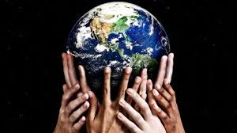

O Planeta Terra é o terceiro dos oito planetas que fazem parte do Sistema Solar. A partir do Sol: Mercúrio, Vênus, Terra, Marte, Júpiter, Saturno, Urano e Netuno. Também chamado de "Planeta Azul", recebe esse denominação posto que grande parte do planeta é formado por água.
Segundo os estudos, a Terra se formou há 4,56 bilhões de anos. Inicialmente, o planeta chamado de Proto-Terra sofria com diversas colisões de outros astros que vagavam pelo universo, como a Terra.Uma dessas colisões teria sido a responsável pela formação da Lua.
Nesse primeiro momento, a Terra encontrava-se envolta em gás e com uma intensa atividade vulcânica. Ao longo de todo um processo de resfriamento, tornou-se possível a formação da crosta terrestre.
O arrefecimento do novo planeta tornou possível a presença de água em estado líquido e, consequentemente, a formação dos oceanos. Desse modo, concluiu-se o processo de formação do planeta Terra, há 4 bilhões de anos.
Algumas centenas de milhões de anos após essa forma, tem início a vida, a partir, dá abiogênese química oriunda da radioatividade e das condições atmosféricas.
Surgem as primeiras células procariontes e, posteriormente as algas anaeróbicas que produziram o oxigênio presente na atmosfera. O oxigênio foi responsável pelo surgimento dos demais seres vivos dentro de todo um processo evolutivo da vida no planeta.
Todo esse processo evolutivo culminou no aparecimento dos primeiros hominídeos há cerca de 14 milhões de anos. O homo sapiens sapiens (ser humano atual) surgiu há apenas 350 mil anos.
O formato da Terra, assim como de todos os planetas, tende a ser esférico por conta de seu centro gravitacional. Entretanto, rigorosamente, o planeta não é perfeitamente esférico, aproxima-se seu formato é chamado de geoide. O geoide é uma aproximação matemática criada pela impossibilidade de calcular a superfície terrestre por conta de sua irregularidade. A superfície terrestre varia entre os cerca de 8850 metros de altura do pico do Monte Everest e os 11000 metros negativos da Fossa das Marianas no Oceano Pacífico.
